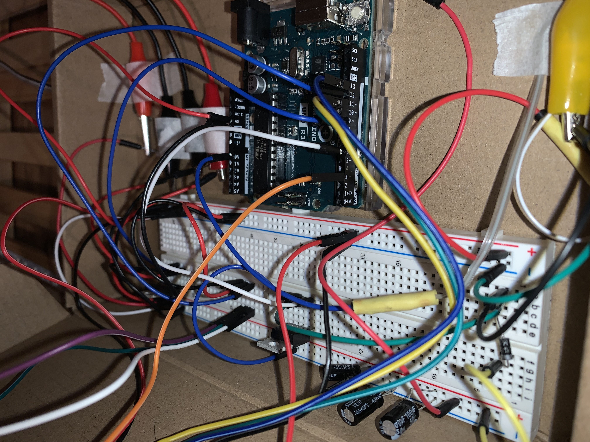
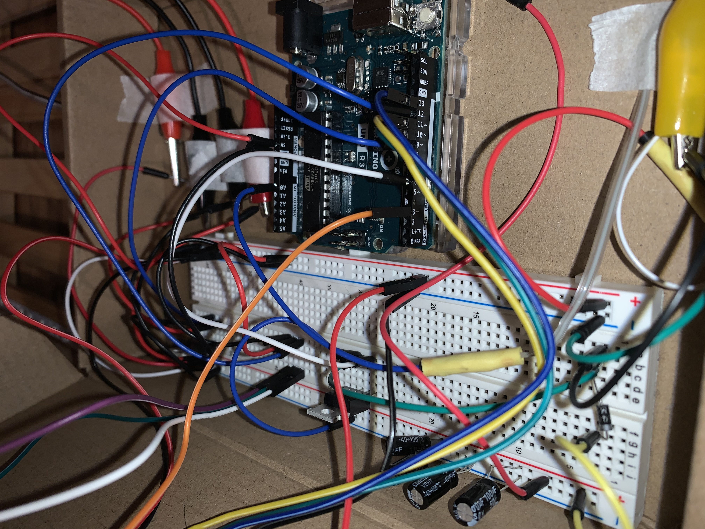

Link to video: https://drive.google.com/file/d/1EI_vBH1m31SofQF6htH3CqEqcCDIsWZG/view?usp=sharing
 

For my final project, I have turned a boring plant stand into an smart plant care system (aka the LeafMeAlone). The LeafMeAlone is equipped with LED plant grow lights that is controllable by an Infared Remote, which will control the brightness of the lights. On the remote, you press 0 to turn the lights on, down to lower the brightness, up to increase the brightness, and power to turn off. The LeafMeAlone will also have a temperature/humidity sensor that will tell the temperature/humidity and determine if it is the ideal temperature/humidity for plants. A matrix LED display will indicate to me the health status of the plant based on these temperature and humidity readings with a smiley face indicating good health, neutral face indicating normal health, and sad face indicating bad health. The LeafMeAlone will also have a soil moisture sensor that you will put into the dirt of a plant that will determine if the plant needs water. If it senses that the plant is too dry, it will automatically send a signal to start pumping water into the pot until the sensor has sensed that the plant is sufficiently watered.
Since the LED strip and the water pump draw larger currents than the 40mA the Arduino output pins can supply, they are powered by a 12V power supply plug. Both LED strip lights and water pump uses transistors to control these components. One transistor controls when the water pump turns on and off from the signals of ardruino pin 6. Another transistor controls when the LED strip turns on or off as well as how bright it is from the signals of arduino pin 9. There are four capacitors that add up to 220 uF that are connected to the 12V Load power to regulate the voltage by temporarily storing energy to maintain a consistent voltage supply. A diode is additionally connected in parallel to the water pump to propect the circuit components from any damage that might occur when the motor continues spinning after it stops stops recieving current and the voltage reverses its direction. Another component of the circuitry is the LED matrix which is connected to the arduino Uno's 5V power, ground and pin 11 for DIN, pin 10 for CS, and pin 13 for CLK. The IR reciever for the remote control is attached 5V power, pin 3, and ground. The DHT11 temperature and humidity sensor is attached to 5V power, pin 12, and ground. The soil mositure sensor is attached to 5V power, pin A0, and ground.
#include < IRremote.h > // Includes the IRremote library to use infrared sensors.
#include < LedControl.h > // Includes the LedControl library for controlling LED matrices.
#include < DHT.h > // Includes the DHT library to interact with DHT humidity and temperature sensors.
// Create an instance of the DHT class.
DHT dht;
// Sensor and Water Pump
const int pumpPin = 6; // initialize digital pin 6 for pump control
const int soilPin = A0; // initialize analog pin A0 for capacitive soil moisture sensor
const int wetSoil = 290; // sensor value when soil is wet
const int drySoil = 377; // sesnor value when soil is dry
// Remote and LED
const int IR_RECEIVE_PIN = 3; // Assigns digital pin 3 to receive signals from an infrared remote
// LED Matrix
const int DIN = 11; // Assigns digital pin 11 to DIN (Data In) for LED matrix.
const int CS = 10; // Assigns digital pin 10 to CS (Chip Select) for LED matrix.
const int CLK = 13; // Assigns digital pin 13 to CLK (Clock) for LED matrix.
int health_stat = 0; // Initialize health status. 0 = Neutral, 1 = Good, 2 = Bad
LedControl lc=LedControl(DIN,CLK,CS,0); // Creates a LedControl object to manage the LED matrix.
// Sensor and Water Pump
int SoilValue; // Variable to store the current soil moisture value.
// Remote and LED
int led = 9; // Assigns PWM pin 9 to control an LED's brightness.
int brightness = 255; // Sets the initial brightness for the LED.
int fadeAmount = 10; // Sets how much the LED's brightness should change.
void setup() {
Serial.begin(9600); // Starts serial communication at 9600 bits per second.
// Remote and LED
IrReceiver.begin(IR_RECEIVE_PIN, ENABLE_LED_FEEDBACK); // starts the reciver and allows it to recieve input
pinMode(led, OUTPUT); // Sets the LED pin as an output.
// Sensor and Water Pump
pinMode(pumpPin, OUTPUT); // initialize the pump pin as an output
//LED Matrix
lc.shutdown(0,false); // Wakes up the LED matrix.
lc.setIntensity(0,15); // Sets the brightness of the LED matrix.
lc.clearDisplay(0); // Clears the LED matrix.
// DHT sensor
dht.setup(12); // Initializes the DHT sensor connected to pin 12.
}
void loop() {
// LED Matrix and Temp/Humid
delay(dht.getMinimumSamplingPeriod()); // Waits a minimum amount of time between sensor readings.
int temperature = dht.getTemperature(); // Reads temperature from the DHT sensor.
int humidity = dht.getHumidity(); // Reads humidity from the DHT sensor.
// Evaluates the health status based on temperature and humidity readings.
if (temperature >= 18 && temperature <= 24 && humidity >= 40) {
health_stat = 1; // Good health
} else if (temperature >= 10 && temperature < 18) {
health_stat = 0; // Neutral health
} else if (temperature < 10 || humidity <= 20) {
health_stat = 2; // Bad health due to cold or dry
} else if (temperature > 24 && temperature <= 32) {
health_stat = 0; // Neutral health
} else if (temperature > 32 || humidity <= 20) {
health_stat = 2; // Bad health due to hot or dry
} else {
health_stat = 0; // Neutral condition for other cases
}
// for debugging
Serial.print("Temperature: ");
Serial.print(temperature);
Serial.print(" °C\tHumidity: ");
Serial.print(humidity);
Serial.println(" %");
//Facial Expressions for LED Matrix
byte smile[8]= {0x3C,0x42,0xA5,0x81,0xA5,0x99,0x42,0x3C}; //Smiley face pattern
byte neutral[8]= {0x3C,0x42,0xA5,0x81,0xBD,0x81,0x42,0x3C}; //Netural face pattern
byte sad[8]= {0x3C,0x42,0xA5,0x81,0x99,0xA5,0x42,0x3C}; //Sad face pattern
// Displays the corresponding facial expression on the LED matrix based on health status.
if (health_stat == 0) {
printByte(neutral); // Neutral health
} else if (health_stat == 1) {
printByte(smile); // Good health
} else if (health_stat == 2) {
printByte(sad); // Bad health
}
// Remote and LED strip lights
// Serial.println(IrReceiver.decodedIRData.command, HEX);
if (IrReceiver.decode()) { // if input is recieved run this code
Serial.println(IrReceiver.decodedIRData.command, HEX); // Codes for remote
IrReceiver.resume(); //keeps the reciver detecting
if (IrReceiver.decodedIRData.command == 0x16) { // Sets LED to bright white when you press 0
analogWrite(led, brightness);
} else if (IrReceiver.decodedIRData.command == 0x9) {// Decrease brightness when you press down
analogWrite(led, brightness =- fadeAmount);
} else if (IrReceiver.decodedIRData.command == 0x7) { // Increase brightness when you press up
analogWrite(led, brightness =+ fadeAmount);
} else if (IrReceiver.decodedIRData.command == 0x45) { // turn lights off manually when you press power
analogWrite(led, 0);
}
}
// Sensor and Water Pump
int soilValue = analogRead(soilPin); // read the analog value from sensor
Serial.println(soilValue); // debugging
// Determine status of our soil
if (soilValue < wetSoil) {
Serial.println("Status: Soil is too wet");
digitalWrite(pumpPin, LOW); // turn off water pump when soil is too wet
} else if (soilValue >= wetSoil && soilValue < drySoil) {
Serial.println("Status: Soil moisture is perfect");
digitalWrite(pumpPin, LOW); // turn off water pump when soil is perfect
} else if (soilValue > 450) {
digitalWrite(pumpPin, LOW); // turn off water pump when sensor is in air
} else if (soilValue > drySoil) {
Serial.println("Status: Soil is too dry - time to water!");
digitalWrite(pumpPin, HIGH); // turn on pump when soil is too dry
}
}
// Displays the faces onto the LED matrix
void printByte(byte character []){
// Loops through each byte of the character array and sends it to the LED matrix.
int i = 0;
for(i=0;i<8;i++)
{
lc.setRow(0,i,character[i]);
}
}